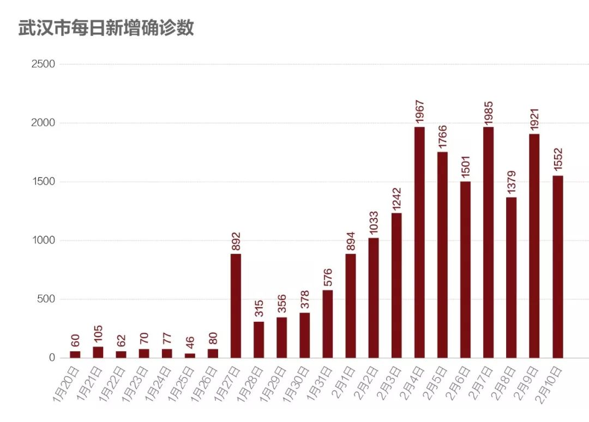
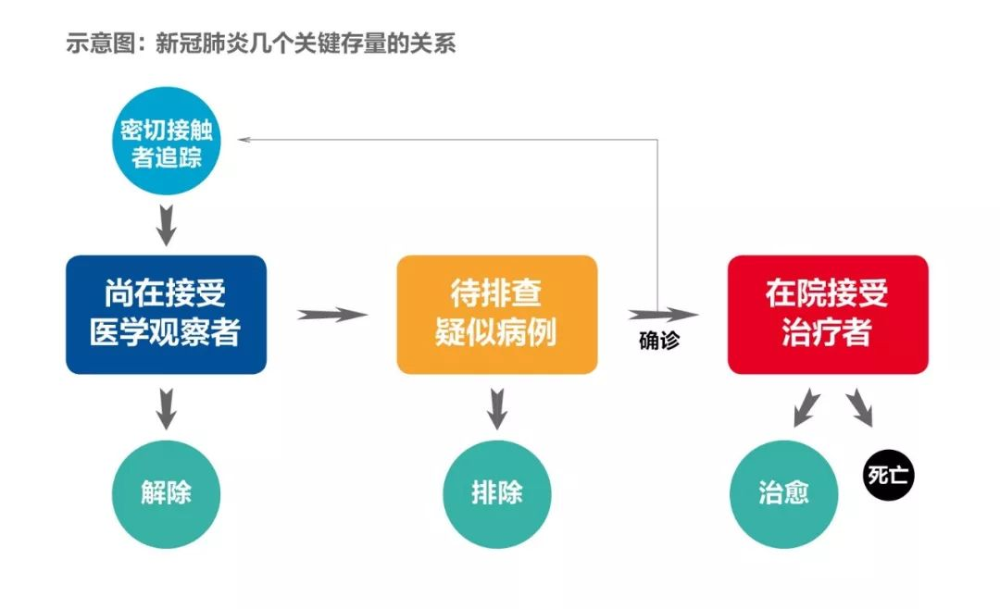
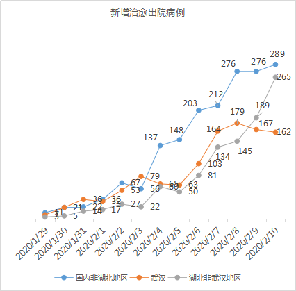
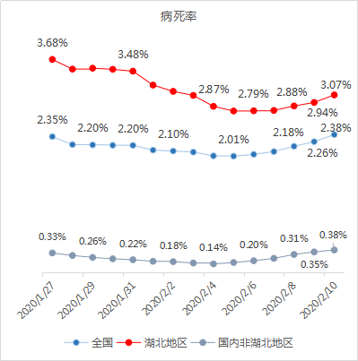

数说疫情0210：武汉反弹，其他地区向好
原文链接 备份链接 图/法新 文 |《财经》数据研究员 徐进 图 | 视觉中心总监 黎立 编辑 | 谢丽容 1. 今日概况： 2月9日0—24时，31个省（自治区、直辖市）和新疆生产建设兵团报告，新增确诊病例3062例（湖北2618 …

_
今起武汉全市范围对居民小区实施封闭管理。小编身在武汉，响应号召，更要在家安心分析数据。武汉挺住！
_
文 |《财经》数据研究员 徐进
图 | 视觉中心总监 黎立
编辑 | 谢丽容
1. 今日概况
2月10日0—24时，31个省（自治区、直辖市）和新疆生产建设兵团报告，新增确诊病例2478例（湖北2097例），新增重症病例849例（湖北839例），新增死亡病例108例（湖北103例，北京、天津、黑龙江、安徽、河南各1例），新增疑似病例3536例（湖北1814例）。

图1
2. 新增病例：武汉尚待巩固，其他地区明朗

图2
国内非湖北地区继续下降。对称形态已基本清晰。

图3
湖北非武汉地区继续下降，下降趋势得以巩固。接下来可望形成对称形态，其中2月初孝感、黄冈小“堰塞湖”排洪影响隐约可见。

图4
武汉数据有好转。但鉴于此前武汉数据曾多次反复，我们仍须持审慎态度。数说疫情0209中我们对武汉做出“洪峰可能已过”的乐观估计，有多位武汉网友指出2月8日新增病例下降可能是医院床位受限造成。对此我们倾向于采信。我们把这理解为一场艰难的“拉锯战”。又据人民日报昨日报道：2月10日武汉市领导再次表示全市加大排查和集中救治力度，“截至8日，有确诊重症患者1499人没有得到入院治疗。经过这两天的努力，到今天（2月10日）中午，1499名重症确诊患者已经全部入院”。相信在党中央、中央指导组、省、市党委政府领导下，在全国各方有力支援下，床位、设施和医护人员等关键医疗资源近期会持续陆续到位，追踪、隔离、排查、检测、收治能力全面提高，“堰塞湖”终将化解，疫情终会得到控制。
3. 确诊病例增长率：武汉回落，其他地区继续下行

图5
武汉增长率回落到10%以下。湖北非武汉地区下降到5%以下。国内非湖北地区继续下降到4%以下。我们对国内非湖北地区和湖北非武汉地区的数据进行分段拟合，同时参考SARS的数据形态，近似推测国内非湖北地区新增确诊病例归零或接近归零的时间为2月24日-26日；湖北非武汉地区新增确诊归零或接近归零的时间应在2月26日-28日。对武汉暂不推测。
4. “顶”在何处？
我们认为现在可以说说此次疫情的拐点和顶了。
先做一些背景讨论。数说疫情0206、0207中我们曾讨论过关于“拐点”存在一些分歧。数学定义的拐点在山腰，常识里的拐点在山顶。我们采用常识的说法：山顶。其实数学的拐点也是顶，只不过是增量的顶。而常识的拐点是存量本身的顶，也就是增量归零的点。数学更有预见性，但常识更直观易感。增量的顶其实大概率已经过了，只待进一步确认了（如前面图2、图3所示）。常识的顶也即存量的顶还没到来。我们现在看看这个顶。
我们讨论三个存量：尚在接受医学观察者、待排查疑似病例数、在院治疗人数。这三个存量事关生死，对应大规模行政、社会、医疗资源，对疫情而言相当重要。它们之间有一定的闭环关系（见示意图），所以任何一座大山见顶并开始下降都可能是全面好转的开始。

图6
先看尚在接受医学观察人数。

图7
非湖北地区接受医学观察人数继续呈现下降。

5. 待排查疑似病例
很多网友一直关心这个数。此前因为湖北没有发布数据，很难进行分析。今天是湖北开始发布此数据的第三天。

图8
我们看出全国待排查疑似病例第二天出现大幅下降。湖北在9日下降5000多例基础上，继续大幅下降近2000例，显示其排查力度大增。非湖北地区也连续两天下降。
与此相关的是密切接触者的追踪能力。

图9
上图可见，非湖北地区一直保持较强追踪力度。
6. 在院治疗人数

图10
非湖北区已现见顶迹象，湖北地区住院治疗人数再次出现大幅跳增。印证近几日中央指导组和省、市领导关于加大收治力度、提升救治能力的讲话得以实施。（还记得武汉市领导昨天说的1499人？）
7. 新增治愈和病死率

图11
国内非湖北地区、湖北非武汉地区新治愈人数都在增加。武汉这两天有所回落。

图12
国内非湖北地区新增治愈人数与新增确诊人数继续接近。据报由于发现散发潜伏期超长病例，有些医疗机构可能将治愈观察期延长。有可能延缓新增治愈人数增长，导致交叉点推后到来。

图13
病死率持续小幅回升。很多网友对这一变动表示担心。我们初步认为这主要是疫情不同阶段分子分母变动不同步造成，当属正常。
小结：武汉“堰塞湖”正在有力化解。虽难免反复，但趋势已明。国内非湖北地区、湖北非武汉地区持续向好。疫情之顶已露端倪。
_
数说疫情
_
_
02月10日
_
_
02月09日
_
_
02月08日
_
_
02月07日
_
_
02月06日
▲点击图片查看更多疫情报道
责编 | 蒋丽 lijiang@caijing.com.cn
本文为《财经》杂志原创文章，未经授权不得转载或建立镜像。如需转载，请在文末留言申请并获取授权。
原文链接 备份链接 图/法新 文 |《财经》数据研究员 徐进 图 | 视觉中心总监 黎立 编辑 | 谢丽容 1. 今日概况： 2月9日0—24时，31个省（自治区、直辖市）和新疆生产建设兵团报告，新增确诊病例3062例（湖北2618 …
原文链接 备份链接 非常时期，武汉成了全国人民挂念、祈福的城市。封城后，武汉人民的真实生活是什么样？ 正和岛自1月26日起特别推出《叶青：我在武汉疫区的第N天》专栏。叶青是一位定居武汉40年的市民，也是一名学者和官员。接下来的一段时间， …
原文链接 备份链接 【财新网】（记者 丁捷 综合）全国新冠肺炎现有疑似病例首次出现下降，2月9日一天内全国累计“消化”疑似病例9361例，其中湖北省为7472例，这也与疑似病例检测的速度加快有关，但“消化”的疑似患者去了哪里，是否全部进 …
原文链接 备份链接 【财新网】（记者 黄蕙昭 综合）武汉“封城”距今已有半月，疫情正呈现城市向农村蔓延、输入型向社区感染型发展的新态势。随着武汉周边地市疫情防控的严峻形势浮出水面，“湖北不止一个武汉”成舆论诉求；疫情艰难攻坚时期，如何避 …
原文链接 备份链接 文 |《财经》数据研究员 徐进 编辑 | 谢丽容 元宵节过完了，再下来是“龙抬头”。 1、 今日概况 2月8日0—24时，31个省（自治区、直辖市）和新疆生产建设兵团报告，新增确诊病例2656例（湖北2147例），新增 …